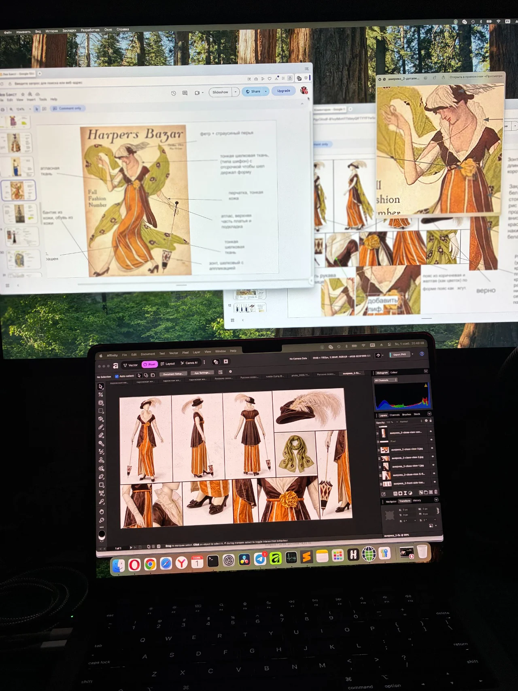
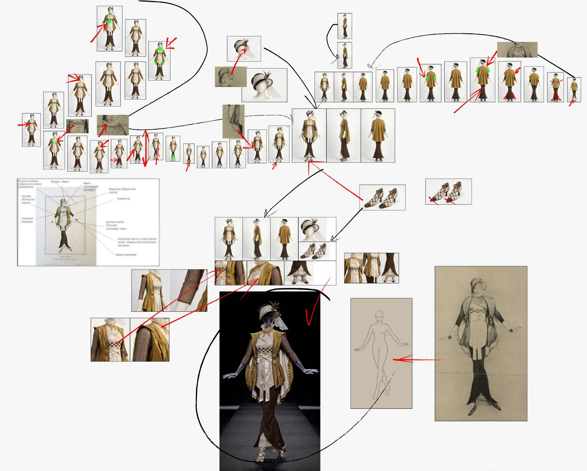
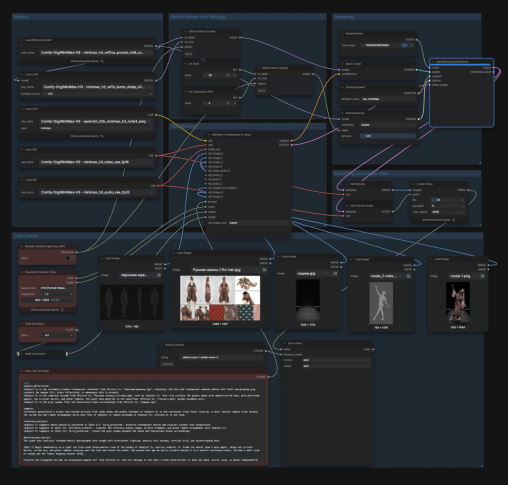

Дефиле в костюмах Льва Бакста
Третьяковская галерея · 2026
Визуализация и анимация костюмов по эскизам Льва Бакста. Арт-дирекция, сценарий и монтаж.
Для выставки «Лев Бакст» в Третьяковской галерее я создал десятиминутное видеодефиле: 20 костюмов по эскизам художника превратились в реалистичные наряды и пришли в движение. Выставка приурочена к 160-летию со дня рождения Бакста.
Я отвечал за визуализацию и анимацию костюмов, арт-дирекцию, сценарий и монтаж. Музыку написал Дима Невольник.
В основе — подиумный выход, соединённый с театральными и балетными позами. Бакст работал с театром, и мне хотелось сохранить эту связь: движения персонажей опираются на старые фотографии артистов в его костюмах.
От эскиза к костюму
Костюмы прорабатывал вместе с кураторами, которые долго изучали Бакста и его работы. Важно было всё: где три слоя тонкого шёлка, где атласная лента, как завёрнут платок и на какие пуговицы пристёгивается накидка.
Если на шляпке три пуговки, обёрнутые тканью, то это должны быть три пуговки, обёрнутые тканью. Никаких стразиков, даже если так симпатично.
За время работы освоил и новый для себя язык деталей: шемизетка, украшение с камеей, чёрные фестоны, подшитые к платью.

Сначала собирал примерный вид наряда спереди, сбоку и сзади. Затем прорабатывал детали: поправить форму, сделать тонкий шёлк прозрачным, заменить перья в головном уборе. Удачный элемент переносил через маску в редакторе и снова генерировал отдельные части. Всё по кусочкам, шаг за шагом.
Использовал Qwen Image, Nano Banana и много ручной работы. На один наряд уходило от пяти часов до двух дней. Мы вместе с кураторами уточняли детали, пока результат не соответствовал эскизу.

Движение и визуальная подача
Для анимации использовал MiniMax в ComfyUI. Расписывал сцены по секундам, подбирал референсы и составлял подробные промпты — иногда на 10 тысяч знаков. ChatGPT помогал приводить их к нужному для модели формату; каждую сцену затем проверял и дорабатывал вручную.
Для финального десятиминутного ролика сгенерировал около 500 видео. Из них отбирал движения и собирал последовательность выходов для 20 нарядов.

Третьяковка доверила мне разработку сценария и всей визуальной подачи. Я продумывал персонажей, свет, движения и происходящее в кадре — так, чтобы каждый выход раскрывал характер костюма.
Музыка
Музыку доверил дорогому другу Диме Невольнику. Как и в нашей работе для Суздаля, он почувствовал музыку в этих безмолвных движениях: соединил фэшн-бит с оркестровым звучанием. Всё как мы любим. Дима внимательно работал с комментариями, и вместе с кураторами мы довели музыку до финального варианта.
Это единственная инсталляция на выставке со звуком. В монтаже музыка и движения персонажей соединились в одно дефиле.
Видео
Спасибо Третьяковке, кураторам и Наталии Горюновой за доверие!